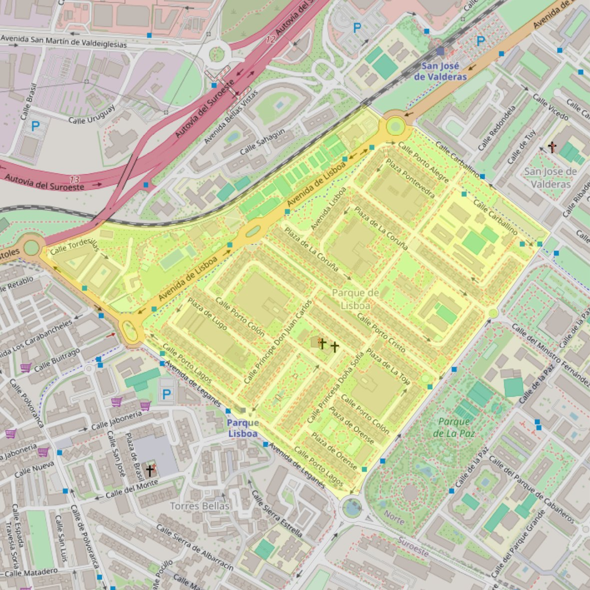

San Saturnino

- Arciprestazgo
- Alcorcón
- Población
- Alcorcón
- Dirección postal
- Pza. Príncipes de España, 1
- Código postal
- 28924
- Extensión
- 0,47 km² (47 ha)
- Teléfono
- 916 646 213
- Correo electrónico
- sansaturnino-alcorcon@diocesisgetafe.es
Arciprestazgos y parroquias de la Diócesis de Getafe
